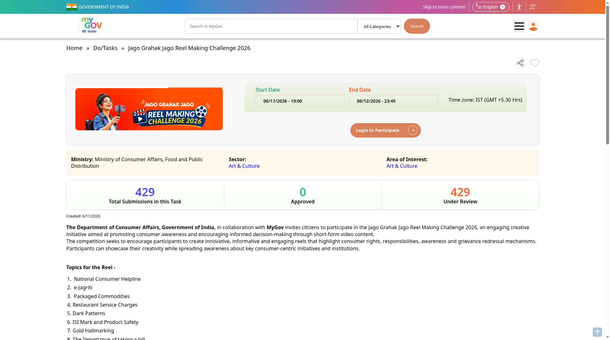
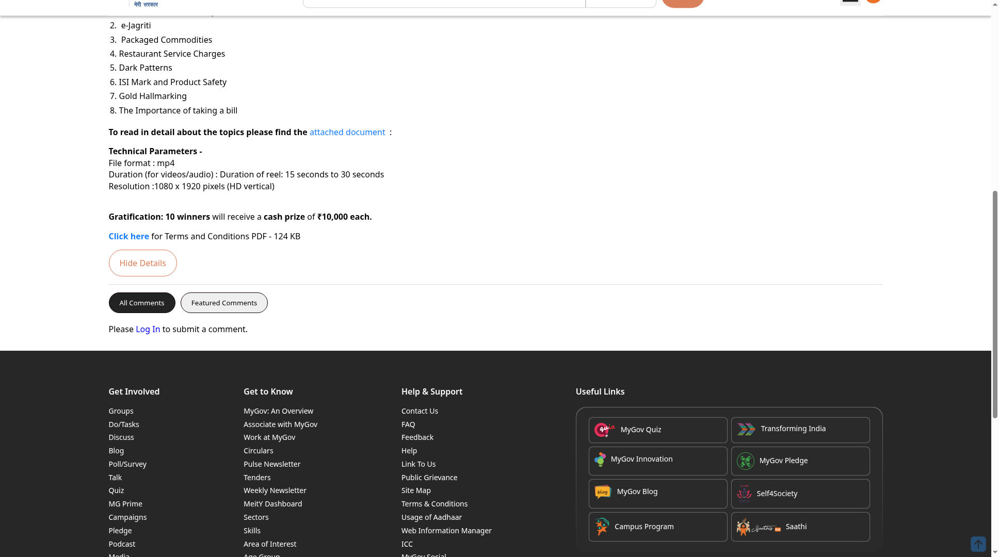
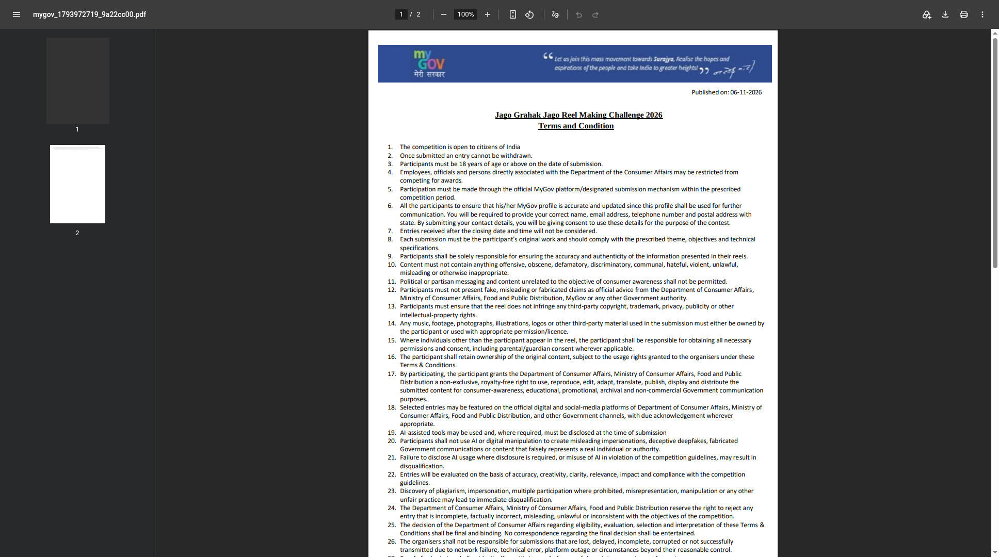
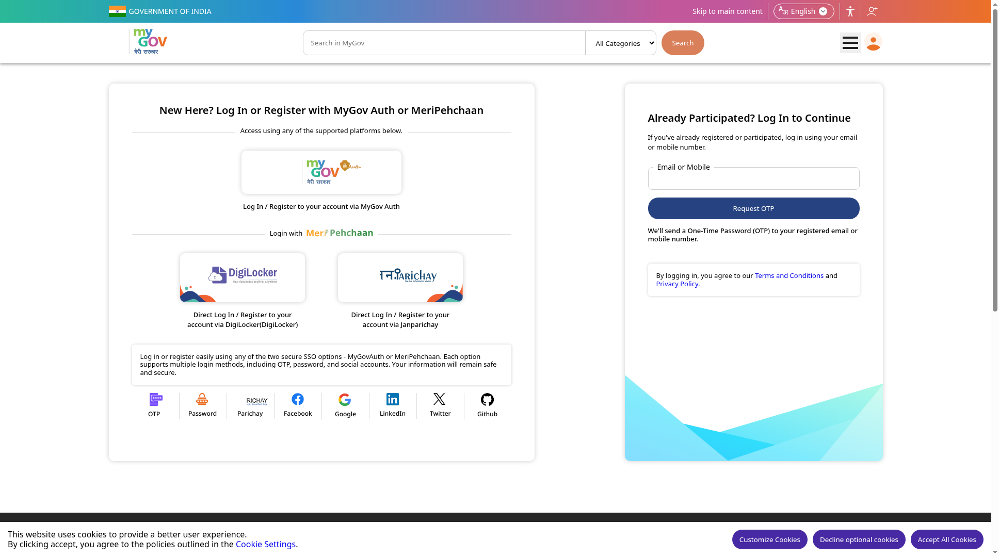

Jago Grahak Jago reel challenge: 10 winners get ₹10,000 each
Indian citizens aged 18 or above can make an original 15-30 second reel about consumer awareness for the Department of Consumer Affairs and MyGov.
Who can enter?
The terms say Indian citizens aged 18 or above on the submission date. Kerala entrants are within this all-India scope. Employees, officials and people directly associated with the Department of Consumer Affairs may be restricted from awards. Use an accurate, updated MyGov profile with the name, email, phone and postal address/state required for contest communication.
Language matters: the topic attachment permits English, Hindi or both together. It does not list Malayalam-only reels. A Malayalam explanation in this article does not expand the competition languages.

Official task page: deadline, IST timezone and participation button. Actual full-HD desktop capture, 25 November 2026. Emblem-containing marks masked; no personal information entered. Tap to enlarge.
What to make
- Duration: 15 to 30 seconds.
- Format: MP4.
- Resolution: 1080 × 1920 pixels, vertical.
- Language: English, Hindi or both, according to the topic PDF.
- Theme: accurate consumer awareness, not political or unrelated messaging.
Choose one of the listed topics
- National Consumer Helpline, 1915.
- e-Jagriti and digital consumer redressal.
- Packaged commodity declarations and labels.
- Restaurant service charges.
- Dark patterns in digital interfaces.
- ISI mark and product safety.
- Gold hallmarking.
- Why asking for and keeping a bill matters.
Use the official topic attachment as your brief. It supplies descriptions and reference links. Read the current authority's guidance before making a legal or product-safety claim. Do not present a fictional scene as an actual government notice, official advice or a real person's statement.

Technical specifications, prize statement and official terms link. Actual full-HD desktop capture, 25 November 2026. Emblem-containing marks masked; no personal information entered. Tap to enlarge.
Prizes and judging
The task page announces 10 winners receiving ₹10,000 each. It is a judged competition, not an automatic payment for participating. The terms list accuracy, creativity, clarity, relevance, impact and compliance as evaluation criteria. The organisers may change the timeline, specifications, prize or terms, or suspend/cancel the contest. Check the live page again before submission.
1. Read the task and both attachments
Open the official task, press Show Details if the description is collapsed, and read both the detailed topic attachment and the Terms and Conditions. Check age, nationality, format and content rights before recording. Once submitted, an entry cannot be withdrawn.

Official terms PDF: eligibility, originality and content rights. Actual full-HD desktop capture, 25 November 2026. Emblem-containing marks masked; no personal information entered. Tap to enlarge.
2. Prepare a compliant original reel
Record your own footage and use only music, photographs, illustrations, logos or other third-party material you own or have permission/licence to use. Obtain consent from other people who appear, including parent/guardian consent where needed. The terms permit AI assistance with disclosure where required, but prohibit deceptive impersonation, misleading deepfakes and fabricated government communications. The entrant remains responsible for facts and rights.
You keep ownership, but grant the Department a non-exclusive, royalty-free right to use, edit, adapt, translate, publish and distribute the entry for the government purposes listed in the terms. Selected work may appear on official digital/social channels. Read that licence before entering.
3. Sign in through the official participation button
- Select Login to Participate on the task page.
- The live login page offers MyGov Auth and MeriPehchaan routes. Existing participants can use their registered email/mobile and request an OTP through the page.
- Complete your own login or registration and check the profile details used for contest contact. Never share your OTP or password.
- Return to this exact task and follow the submission mechanism shown after login.
We inspected public task details, attachments and the blank login page only. We did not log in, request an OTP, upload a reel or submit an entry. The exact authenticated upload/link field, file-size limit and confirmation screen were not inspected, so this guide does not invent them.

Blank MyGov sign-in and registration routes. Actual full-HD desktop capture, 25 November 2026. Emblem-containing marks masked; no personal information entered. Tap to enlarge.
4. Check and submit before the deadline
Play the final export and check duration, portrait dimensions, audio, captions, facts, rights and language. Follow every required field in the live authenticated form, including any disclosure it asks for. Submit early enough to handle network problems, not at the last minute. Save any confirmation the site provides and check the status it actually reports. The terms warn that proof of submission alone does not prove successful receipt or acceptance.
Do not post your entry as a public comment and assume you have entered. Use the official participation mechanism. The public terms do not clearly give a universal entry-count limit; follow any restriction shown in the live form rather than assuming unlimited entries.
English and Malayalam application videos
No reliable current-cycle full submission walkthrough in English or Malayalam was verified. The screenshots show the public steps we could inspect. The post-login submission stage remains untested.
മലയാളത്തിൽ ചുരുക്കം
18 വയസ്സ് പൂർത്തിയായ ഇന്ത്യൻ പൗരന്മാർക്ക് Jago Grahak Jago Reel Making Challenge 2026ൽ പങ്കെടുക്കാം. ഉപഭോക്തൃ ബോധവത്കരണത്തെക്കുറിച്ചുള്ള സ്വന്തം 15-30 സെക്കൻഡ് വീഡിയോ MP4 രൂപത്തിൽ 1080 × 1920 റെസല്യൂഷനിൽ തയ്യാറാക്കണം. ഇംഗ്ലീഷോ ഹിന്ദിയോ രണ്ടും ചേർത്തോ വേണമെന്നാണ് ഔദ്യോഗിക വിഷയരേഖ; മലയാളം മാത്രം പട്ടികയിലില്ല. 10 വിജയികൾക്ക് ₹10,000 വീതം. അവസാന തീയതി 2026 ഡിസംബർ 6 രാത്രി 11:45 IST. MyGov വഴി സമർപ്പിക്കണം. അയച്ച എൻട്രി പിൻവലിക്കാനാവില്ല. പകർപ്പവകാശവും ചിത്രത്തിലുള്ളവരുടെ സമ്മതവും ഉറപ്പാക്കുക. ലോഗിൻ ചെയ്ത ശേഷമുള്ള സമർപ്പണ ഫോം ഞങ്ങൾ പരീക്ഷിച്ചിട്ടില്ല.
Official sources
Jago Grahak Jago: 10 വിജയികൾക്ക് ₹10,000 വീതം
ഉപഭോക്തൃ ബോധവത്കരണത്തെക്കുറിച്ച് 15-30 സെക്കൻഡ് റീൽ തയ്യാറാക്കാൻ 18 വയസ്സ് പൂർത്തിയായ ഇന്ത്യൻ പൗരന്മാർക്ക് അവസരം. Department of Consumer Affairs, MyGov എന്നിവരുടെ മത്സരം.
ആർക്കൊക്കെ പങ്കെടുക്കാം?
സമർപ്പിക്കുന്ന ദിവസം 18 വയസ്സ് പൂർത്തിയായ ഇന്ത്യൻ പൗരന്മാർക്ക് പങ്കെടുക്കാം. കേരളത്തിൽ നിന്നുള്ളവർക്കും അപേക്ഷിക്കാം. വകുപ്പുമായി നേരിട്ട് ബന്ധപ്പെട്ട ഉദ്യോഗസ്ഥർ, ജീവനക്കാർ തുടങ്ങിയവർക്ക് സമ്മാനത്തിനുള്ള നിയന്ത്രണം ഉണ്ടായേക്കാം. MyGov പ്രൊഫൈലിലെ പേര്, ഇമെയിൽ, ഫോൺ, സംസ്ഥാനം ഉൾപ്പെടുന്ന തപാൽ വിലാസം എന്നിവ ശരിയാണെന്ന് ഉറപ്പാക്കണം. തുടർ ആശയവിനിമയത്തിന് ഈ വിവരങ്ങളാണ് ഉപയോഗിക്കുക.
ഭാഷ ശ്രദ്ധിക്കുക: ഇംഗ്ലീഷ്, ഹിന്ദി, അല്ലെങ്കിൽ രണ്ടും ചേർന്ന റീലുകളാണ് ഔദ്യോഗിക വിഷയരേഖ പറയുന്നത്. മലയാളം മാത്രം അനുവദിച്ച ഭാഷകളിൽ ഇല്ല. ഇവിടെ മലയാളത്തിൽ വിശദീകരിക്കുന്നത് മത്സരത്തിന്റെ ഭാഷാനിയമം മാറ്റുന്നില്ല.
ഔദ്യോഗിക പേജിലെ അവസാന തീയതിയും IST സമയവും. 2026 നവംബർ 25ലെ യഥാർത്ഥ full-HD desktop capture. ദേശീയചിഹ്നം ഉൾപ്പെടുന്ന ഭാഗങ്ങൾ മറച്ചിട്ടുണ്ട്; സ്വകാര്യവിവരങ്ങൾ നൽകിയിട്ടില്ല. വലുതാക്കാൻ ചിത്രം തുറക്കാം.
വീഡിയോ എങ്ങനെയായിരിക്കണം?
- ദൈർഘ്യം: 15 മുതൽ 30 സെക്കൻഡ് വരെ.
- ഫയൽ: MP4.
- റെസല്യൂഷൻ: 1080 × 1920, ലംബരൂപത്തിൽ.
- ഭാഷ: ഇംഗ്ലീഷ്, ഹിന്ദി അല്ലെങ്കിൽ രണ്ടും.
- വിഷയം: കൃത്യമായ ഉപഭോക്തൃ ബോധവത്കരണം. രാഷ്ട്രീയമോ ബന്ധമില്ലാത്തതോ ആയ ഉള്ളടക്കം പാടില്ല.
തിരഞ്ഞെടുക്കാവുന്ന എട്ട് വിഷയങ്ങൾ
- National Consumer Helpline, 1915.
- e-Jagriti വഴി ഡിജിറ്റൽ ഉപഭോക്തൃ പരാതിപരിഹാരം.
- പാക്കറ്റ് ഉൽപ്പന്നങ്ങളിലെ നിർബന്ധ വിവരങ്ങൾ.
- റെസ്റ്റോറന്റ് സർവീസ് ചാർജ്.
- ഓൺലൈൻ ഡാർക്ക് പാറ്റേണുകൾ.
- ISI മാർക്കും ഉൽപ്പന്നസുരക്ഷയും.
- സ്വർണത്തിന്റെ ഹാൾമാർക്കിങ്.
- ബിൽ ചോദിച്ചു വാങ്ങി സൂക്ഷിക്കേണ്ടതിന്റെ പ്രാധാന്യം.
ഓരോ വിഷയത്തിനുമുള്ള വിവരണവും റഫറൻസ് ലിങ്കുകളും ഔദ്യോഗിക വിഷയരേഖയിലുണ്ട്. നിയമം, ഉൽപ്പന്നസുരക്ഷ തുടങ്ങിയവയെക്കുറിച്ച് പറയുമ്പോൾ ബന്ധപ്പെട്ട അധികൃതരുടെ നിലവിലെ നിർദേശം പരിശോധിക്കുക. സാങ്കൽപ്പിക രംഗം യഥാർത്ഥ സർക്കാർ അറിയിപ്പോ വ്യക്തിയുടെ യഥാർത്ഥ പ്രസ്താവനയോ ആയി അവതരിപ്പിക്കരുത്.
വീഡിയോ നിർദേശങ്ങളും സമ്മാനവും നിബന്ധനയുടെ ലിങ്കും. 2026 നവംബർ 25ലെ യഥാർത്ഥ full-HD desktop capture. ദേശീയചിഹ്നം ഉൾപ്പെടുന്ന ഭാഗങ്ങൾ മറച്ചിട്ടുണ്ട്; സ്വകാര്യവിവരങ്ങൾ നൽകിയിട്ടില്ല. വലുതാക്കാൻ ചിത്രം തുറക്കാം.
സമ്മാനവും തിരഞ്ഞെടുപ്പും
10 വിജയികൾക്ക് ₹10,000 വീതമാണ് ഔദ്യോഗിക പേജിലെ പ്രഖ്യാപനം. പങ്കെടുക്കുന്ന എല്ലാവർക്കും ലഭിക്കുന്ന തുകയല്ല. കൃത്യത, സൃഷ്ടിപരത, വ്യക്തത, പ്രസക്തി, സ്വാധീനം, നിയമപാലനം എന്നിവയാണ് വിലയിരുത്തൽ ഘടകങ്ങൾ. സമയക്രമം, സാങ്കേതിക നിർദേശം, സമ്മാനം, നിബന്ധനകൾ എന്നിവ മാറ്റാനും മത്സരം നിർത്താനോ റദ്ദാക്കാനോ സംഘാടകർക്ക് അവകാശമുണ്ട്. അയയ്ക്കുന്നതിനു മുമ്പ് പേജ് വീണ്ടും പരിശോധിക്കുക.
1. പേജും രണ്ട് PDFകളും വായിക്കുക
ഔദ്യോഗിക പേജിൽ വിവരണം അടച്ചിരിക്കുകയാണെങ്കിൽ Show Details തുറക്കുക. വിഷയരേഖയും Terms and Conditionsഉം വായിക്കുക. പ്രായം, പൗരത്വം, വീഡിയോരൂപം, ഉപയോഗാവകാശം എന്നിവ ഉറപ്പാക്കിയ ശേഷമേ റെക്കോർഡ് ചെയ്യാവൂ. അയച്ച എൻട്രി പിൻവലിക്കാനാവില്ല.
പ്രായം, ഒറിജിനൽ ഉള്ളടക്കം, ഉപയോഗാവകാശം എന്നിവ വ്യക്തമാക്കുന്ന ഔദ്യോഗിക PDF. 2026 നവംബർ 25ലെ യഥാർത്ഥ full-HD desktop capture. ദേശീയചിഹ്നം ഉൾപ്പെടുന്ന ഭാഗങ്ങൾ മറച്ചിട്ടുണ്ട്; സ്വകാര്യവിവരങ്ങൾ നൽകിയിട്ടില്ല. വലുതാക്കാൻ ചിത്രം തുറക്കാം.
2. സ്വന്തം റീൽ തയ്യാറാക്കുക
സ്വന്തം ദൃശ്യങ്ങൾ ഉപയോഗിക്കുക. സംഗീതം, ഫോട്ടോ, ചിത്രം, ലോഗോ തുടങ്ങിയ മറ്റുള്ളവരുടെ സൃഷ്ടികൾക്ക് ആവശ്യമായ ലൈസൻസോ അനുമതിയോ വേണം. വീഡിയോയിൽ വരുന്നവരുടെ സമ്മതം ഉറപ്പാക്കുക; ആവശ്യമായിടത്ത് രക്ഷിതാവിന്റെ അനുമതിയും വേണം. ആവശ്യപ്പെടുന്നിടത്ത് വെളിപ്പെടുത്തിക്കൊണ്ട് AI സഹായം ഉപയോഗിക്കാമെന്ന് നിബന്ധന പറയുന്നു. തെറ്റിദ്ധരിപ്പിക്കുന്ന ആൾമാറാട്ടം, ഡീപ്ഫേക്ക്, വ്യാജ സർക്കാർ അറിയിപ്പ് എന്നിവ പാടില്ല. വിവരങ്ങളുടെ കൃത്യതയ്ക്കും അവകാശങ്ങൾക്കും പങ്കെടുക്കുന്ന വ്യക്തിയാണ് ഉത്തരവാദി.
ഉടമസ്ഥാവകാശം നിങ്ങളിൽ തുടരും. എന്നാൽ സർക്കാർ ബോധവത്കരണം, വിദ്യാഭ്യാസം, പ്രചാരണം, ശേഖരണം, വാണിജ്യേതര സർക്കാർ ആശയവിനിമയം എന്നിവയ്ക്കായി എൻട്രി ഉപയോഗിക്കാനും തിരുത്താനും വിവർത്തനം ചെയ്യാനും പ്രസിദ്ധീകരിക്കാനും വിതരണം ചെയ്യാനും വകുപ്പിന് non-exclusive, royalty-free അവകാശം നൽകണം. തിരഞ്ഞെടുത്തവ ഔദ്യോഗിക ഡിജിറ്റൽ/സോഷ്യൽ ചാനലുകളിൽ വരാം. പൂർണ്ണ നിബന്ധന വായിച്ചശേഷം തീരുമാനിക്കുക.
3. ഔദ്യോഗിക ബട്ടൺ വഴി ലോഗിൻ ചെയ്യുക
- മത്സരപ്പേജിലെ Login to Participate തിരഞ്ഞെടുക്കുക.
- ലോഗിൻ പേജിൽ MyGov Auth, MeriPehchaan മാർഗങ്ങളുണ്ട്. നിലവിലെ അക്കൗണ്ടിന് രജിസ്റ്റർ ചെയ്ത ഇമെയിൽ/മൊബൈൽ ഉപയോഗിച്ച് പേജിൽ OTP ആവശ്യപ്പെടാം.
- സ്വന്തമായി ലോഗിൻ/രജിസ്ട്രേഷൻ പൂർത്തിയാക്കി പ്രൊഫൈൽ വിവരങ്ങൾ പരിശോധിക്കുക. OTPയോ പാസ്വേഡോ മറ്റൊരാൾക്കും നൽകരുത്.
- ഇതേ മത്സരത്തിലേക്ക് മടങ്ങി ലോഗിൻ ചെയ്തശേഷം കാണുന്ന ഔദ്യോഗിക സമർപ്പണരീതി പിന്തുടരുക.
പൊതുവായി കാണുന്ന മത്സരവിവരങ്ങളും PDFകളും വിവരങ്ങളൊന്നും നിറയ്ക്കാത്ത ലോഗിൻ പേജുമാണ് ഞങ്ങൾ പരിശോധിച്ചത്. ലോഗിൻ ചെയ്യുകയോ OTP ആവശ്യപ്പെടുകയോ വീഡിയോ അപ്ലോഡ് ചെയ്യുകയോ എൻട്രി അയയ്ക്കുകയോ ചെയ്തിട്ടില്ല. ലോഗിൻ കഴിഞ്ഞുള്ള upload/link field, പരമാവധി ഫയൽവലുപ്പം, confirmation screen എന്നിവ പരിശോധിച്ചിട്ടില്ല; അതിനാൽ അവ ഇവിടെ അനുമാനിച്ച് നൽകിയിട്ടില്ല.
വിവരങ്ങൾ നിറയ്ക്കാത്ത MyGov ലോഗിൻ, രജിസ്ട്രേഷൻ പേജ്. 2026 നവംബർ 25ലെ യഥാർത്ഥ full-HD desktop capture. ദേശീയചിഹ്നം ഉൾപ്പെടുന്ന ഭാഗങ്ങൾ മറച്ചിട്ടുണ്ട്; സ്വകാര്യവിവരങ്ങൾ നൽകിയിട്ടില്ല. വലുതാക്കാൻ ചിത്രം തുറക്കാം.
4. പരിശോധിച്ച് സമയത്തിനകം അയയ്ക്കുക
അവസാന ഫയൽ പ്ലേ ചെയ്ത് ദൈർഘ്യം, ലംബറെസല്യൂഷൻ, ശബ്ദം, ക്യാപ്ഷൻ, ഭാഷ, വസ്തുതകൾ, അനുമതികൾ എന്നിവ പരിശോധിക്കുക. ലോഗിൻ കഴിഞ്ഞുള്ള ഫോമിൽ ആവശ്യപ്പെടുന്ന എല്ലാ വിവരങ്ങളും disclosuresഉം നൽകുക. നെറ്റ്വർക്ക് തടസ്സം പരിഹരിക്കാൻ സമയം ബാക്കി വെച്ച് അയയ്ക്കുക. പേജ് നൽകുന്ന സ്ഥിരീകരണം സൂക്ഷിച്ച് യഥാർത്ഥ status പരിശോധിക്കുക. അയച്ചതിന്റെ തെളിവ് മാത്രം വിജയകരമായി ലഭിച്ചെന്നോ സ്വീകരിച്ചെന്നോ ഉള്ള തെളിവല്ലെന്ന് നിബന്ധന വ്യക്തമാക്കുന്നു.
പൊതു കമന്റിൽ വീഡിയോ ഇടുന്നത് ഔദ്യോഗിക എൻട്രിയാണെന്ന് കരുതരുത്. നിർദേശിച്ച സംവിധാനമാണ് ഉപയോഗിക്കേണ്ടത്. എല്ലാവർക്കും ബാധകമായ entry-count limit പൊതുനിബന്ധനയിൽ വ്യക്തമായിട്ടില്ല; പരിധിയില്ലെന്ന് കരുതാതെ ലോഗിൻ ഫോമിലെ നിയന്ത്രണം പാലിക്കുക. ആവശ്യപ്പെട്ടാൽ തിരിച്ചറിയൽ, പ്രായം, പൗരത്വം എന്നിവയ്ക്കുള്ള തെളിവ് നൽകേണ്ടിവരും.
ഇംഗ്ലീഷ്, മലയാളം അപേക്ഷാ വീഡിയോകൾ
ഈ വർഷത്തെ മുഴുവൻ സമർപ്പണരീതിയും കാണിക്കുന്ന വിശ്വസനീയമായ ഇംഗ്ലീഷ്/മലയാളം YouTube walkthrough സ്ഥിരീകരിക്കാനായില്ല. ചിത്രങ്ങൾ പൊതുവായി പരിശോധിക്കാൻ കഴിഞ്ഞ ഘട്ടങ്ങളാണ് കാണിക്കുന്നത്. ലോഗിൻ ശേഷമുള്ള സമർപ്പണഘട്ടം പരീക്ഷിച്ചിട്ടില്ല.